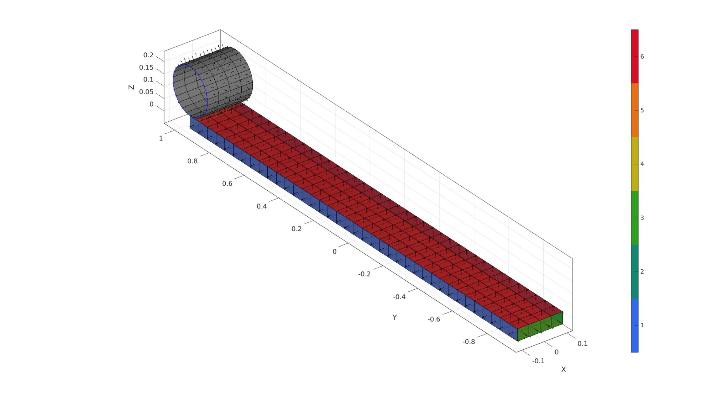
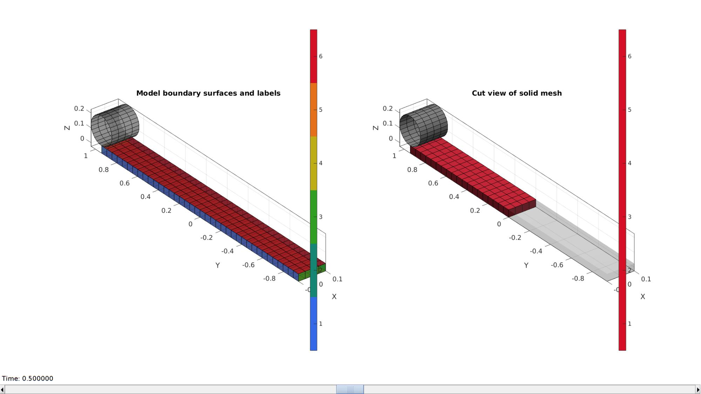
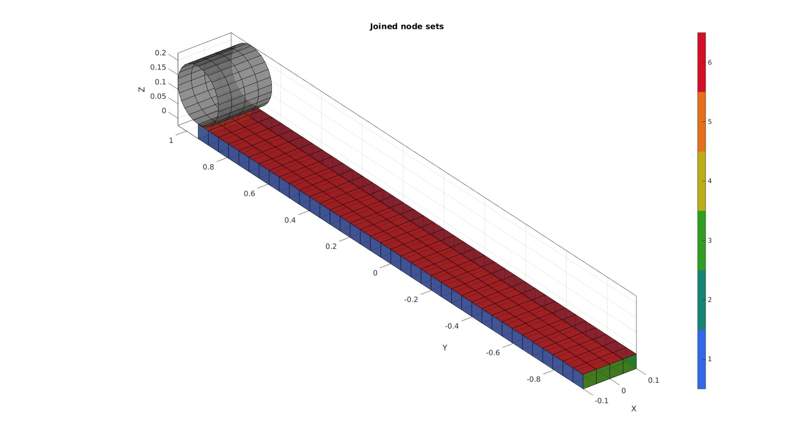
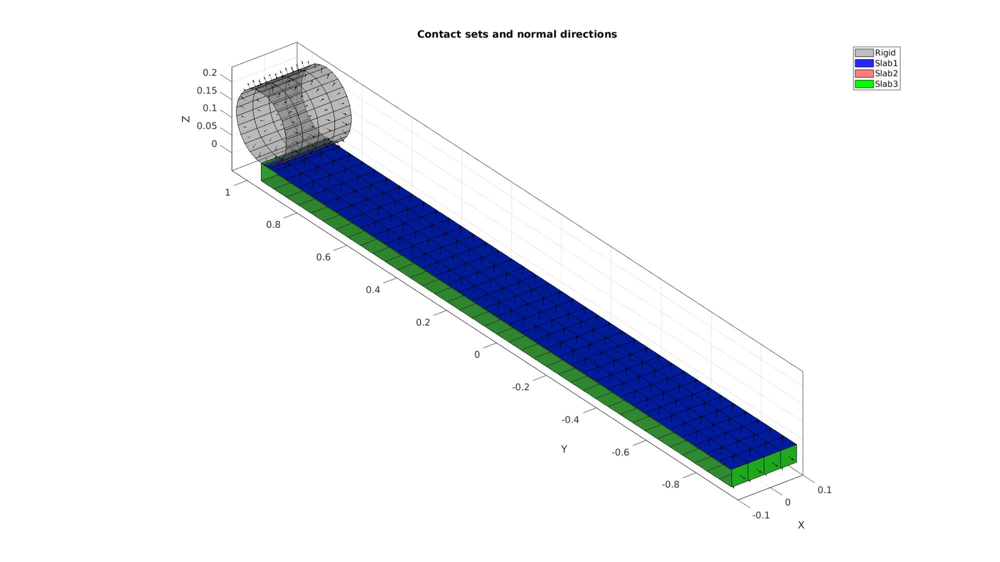
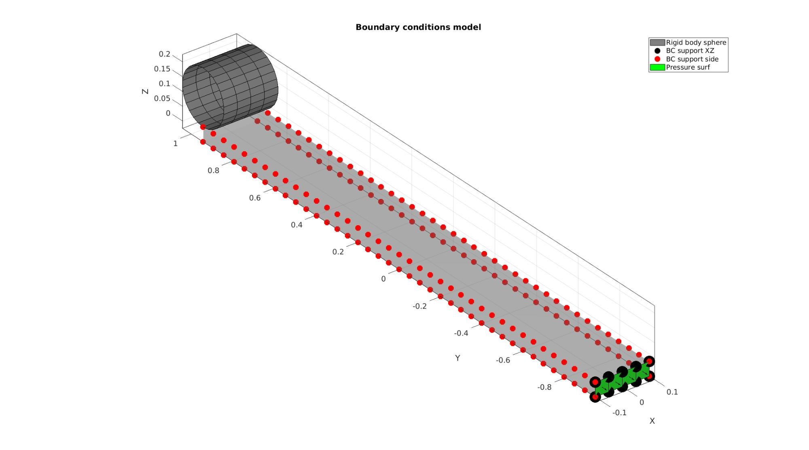
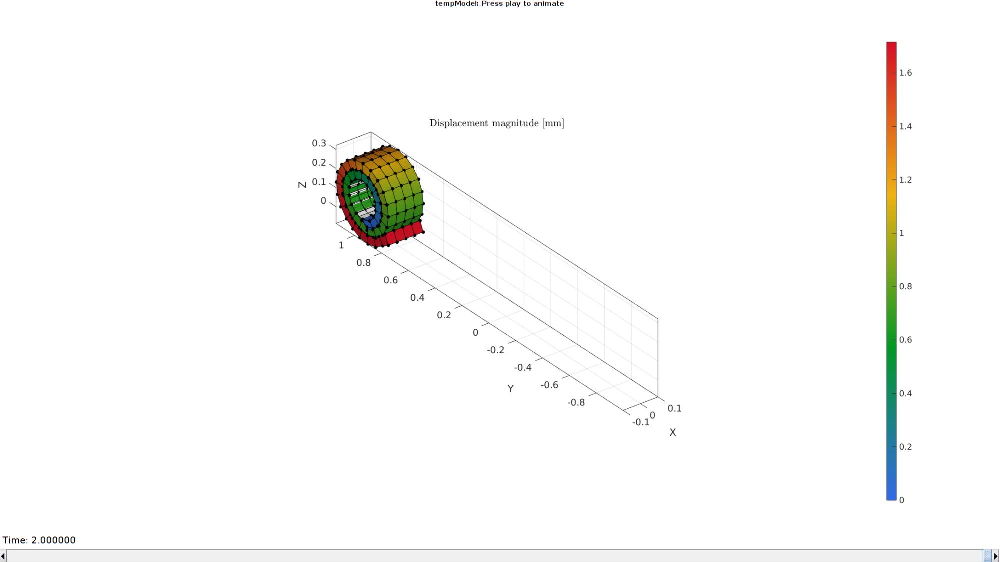

DEMO_febio_0068_roll_self_contact_01
Below is a demonstration for:
- Building geometry for a strip with hexahedral elements, and a cylinder with quadrilateral elements
- Defining the boundary conditions
- Coding the febio structure
- Running the model
- Importing and visualizing the displacement results
Contents
- Keywords
- Plot settings
- Control parameters
- Creating model geometry and mesh
- Creating quadrilateral mesh for the rod
- Joining node sets
- Define contact surfaces
- Define boundary conditions
- Defining the FEBio input structure
- Quick viewing of the FEBio input file structure
- Exporting the FEBio input file
- Running the FEBio analysis
- Import FEBio results
Keywords
- febio_spec version 2.5
- febio, FEBio
- indentation
- contact, sliding, friction
- rigid body constraints
- hexahedral elements, hex8
- quadrilateral elements, quad4
- strip, block, rectangular
- static, solid
- hyperelastic, Ogden
- displacement logfile
clear; close all; clc;
Plot settings
fontSize=15; faceAlpha1=0.8; faceAlpha2=0.3; markerSize=40; markerSize2=20; lineWidth=3;
Control parameters
% Path names defaultFolder = fileparts(fileparts(mfilename('fullpath'))); savePath=fullfile(defaultFolder,'data','temp'); % Defining file names febioFebFileNamePart='tempModel'; febioFebFileName=fullfile(savePath,[febioFebFileNamePart,'.feb']); %FEB file name febioLogFileName=fullfile(savePath,[febioFebFileNamePart,'.txt']); %FEBio log file name febioLogFileName_disp=[febioFebFileNamePart,'_disp_out.txt']; %Log file name for exporting displacement %Rod parameters rodRadius=0.1; %Define prescribed rotation numRotations=2; prescribedRotation=2*pi*numRotations; %Specifying dimensions and number of elements for slab sampleHeight=rodRadius/2;%Height pointSpacing=sampleHeight/1; %Node spacing used in model sampleWidth=pointSpacing*4; %Width sampleLength=prescribedRotation*(rodRadius+sampleHeight); %Length pointSpacings=pointSpacing*[1 1 1]; %Desired point spacing between nodes numElementsWidth=ceil(sampleWidth/pointSpacings(1)); %Number of elemens in dir 1 numElementsLength=ceil(sampleLength/pointSpacings(2)); %Number of elemens in dir 2 numElementsHeight=ceil(sampleHeight/pointSpacings(3)); %Number of elemens in dir 3 %Define rolling tension (pressure applied at slab end) pressureValue=-0.1; %Suitable value depends on geometry %Material parameter set c1=1; %Shear-modulus-like parameter m1=2; %Material parameter setting degree of non-linearity k_factor=50; %Bulk modulus factor k=c1*k_factor; %Bulk modulus formulationType=1; % FEA control settings numTimeSteps1=5; %Number of time steps desired max_refs1=25; %Max reforms max_ups1=0; %Set to zero to use full-Newton iterations opt_iter1=15; %Optimum number of iterations max_retries1=5; %Maximum number of retires dtmin1=(1/numTimeSteps1)/100; %Minimum time step size dtmax1=(1/numTimeSteps1); %Maximum time step size symmetric_stiffness1=0; min_residual1=1e-20; numTimeSteps2=75; %Number of time steps desired max_refs2=25; %Max reforms max_ups2=0; %Set to zero to use full-Newton iterations opt_iter2=25; %Optimum number of iterations max_retries2=20; %Maximum number of retires dtmin2=(1/numTimeSteps2)/100; %Minimum time step size dtmax2=(1/numTimeSteps2); %Maximum time step size symmetric_stiffness2=0; min_residual2=1e-20; runMode='external';%'internal'; %Contact parameters contactPenalty1=5; laugon1=0; minaug1=1; maxaug1=10; contactPenalty2=0.1; laugon2=0; minaug2=1; maxaug2=10; fric_coeff2=0;
Creating model geometry and mesh
A box is created with tri-linear hexahedral (hex8) elements using the hexMeshBox function. The function offers the boundary faces with seperate labels for the top, bottom, left, right, front, and back sides. As such these can be used to define boundary conditions on the exterior.
% Create a box with hexahedral elements beamDimensions=[sampleWidth sampleLength sampleHeight]; %Dimensions beamElementNumbers=[numElementsWidth numElementsLength numElementsHeight]; %Number of elements outputStructType=2; %A structure compatible with mesh view [meshStruct]=hexMeshBox(beamDimensions,beamElementNumbers,outputStructType); %Access elements, nodes, and faces from the structure E1=meshStruct.elements; %The elements V1=meshStruct.nodes; %The nodes (vertices) Fb1=meshStruct.facesBoundary; %The boundary faces Cb1=meshStruct.boundaryMarker; %The "colors" or labels for the boundary faces elementMaterialIndices=ones(size(E1,1),1); %Element material indices % Quick attempt at rounding end % f=V1(:,3); % f=f-min(f(:)); % f=f./max(f(:)); % f=abs(f-1); % % f2=V1(:,2); % f2=f2-min(f2(:)); % f2=f2./max(f2(:)); % % f2=abs(f2-1); % % a=asin(f); % b=sampleHeight*cos(a); % V1(:,2)=V1(:,2)+b.*f2;
Creating quadrilateral mesh for the rod
n=2*round((2*pi*rodRadius)/pointSpacing)+1;
t=linspace(0,2*pi,n);
t=t(1:end-1);
y=rodRadius.*sin(t);
z=rodRadius.*cos(t);
x=zeros(size(z));
Vc=[x(:) y(:) z(:)];
Vc(:,3)=Vc(:,3)-min(Vc(:,3))+sampleHeight/2;
Vc(:,1)=Vc(:,1)-min(Vc(:,1))+min(V1(:,1));
Vc(:,2)=Vc(:,2)+max(V1(:,2));
cPar.depth=sampleWidth;
cPar.patchType='quad';
cPar.dir=1;
cPar.n=[1 0 0];
cPar.closeLoopOpt=1;
cPar.numSteps=numElementsWidth+1;
[E2,V2]=polyExtrude(Vc,cPar);
E2=fliplr(E2);
center_of_mass=mean(V2,1);
cFigure; hold on; gpatch(Fb1,V1,Cb1,'k',faceAlpha1); patchNormPlot(Fb1,V1); gpatch(E2,V2,'kw','k',1); patchNormPlot(E2,V2); plotV(Vc,'b.-'); colormap(gjet(6)); icolorbar; axisGeom(gca,fontSize); camlight headlight; gdrawnow;
Plotting model boundary surfaces and a cut view
hFig=cFigure; subplot(1,2,1); hold on; title('Model boundary surfaces and labels','FontSize',fontSize); gpatch(Fb1,V1,Cb1,'k',faceAlpha1); gpatch(E2,V2,'kw','k',faceAlpha1); colormap(gjet(6)); icolorbar; axisGeom(gca,fontSize); camlight headlight; hs=subplot(1,2,2); hold on; title('Cut view of solid mesh','FontSize',fontSize); optionStruct.hFig=[hFig hs]; gpatch(E2,V2,'kw','k',1); meshView(meshStruct,optionStruct); axisGeom(gca,fontSize); gdrawnow;
Joining node sets
V=[V1;V2;]; %Combined node sets E2=E2+size(V1,1); %Fixed element indices numDigitsMerge=6-numOrder(pointSpacing); %base number of digits on mean [~,indKeep,indFix]=unique(pround(V,numDigitsMerge),'rows'); V=V(indKeep,:); E2=indFix(E2); Fb1=indFix(Fb1); E1=indFix(E1);
Plotting joined geometry
cFigure; title('Joined node sets','FontSize',fontSize); xlabel('X','FontSize',fontSize); ylabel('Y','FontSize',fontSize); zlabel('Z','FontSize',fontSize); hold on; gpatch(Fb1,V,Cb1,'k',faceAlpha1); gpatch(E2,V,'kw','k',faceAlpha1); colormap(gjet(6)); icolorbar; axisGeom(gca,fontSize); camlight headlight; gdrawnow;
Define contact surfaces
% The rigid master surface of the sphere F_contact_master_rod=E2; F_contact_slab1=Fb1(ismember(Cb1,6),:); F_contact_slab2=Fb1(ismember(Cb1,6),:); F_contact_slab3=Fb1(ismember(Cb1,[3 4 5 6]),:); % Plotting surface models cFigure; hold on; title('Contact sets and normal directions','FontSize',fontSize); gpatch(Fb1,V,'kw','none',faceAlpha2); hl(1)=gpatch(F_contact_master_rod,V,'kw','k',0.5); patchNormPlot(F_contact_master_rod,V); hl(2)=gpatch(F_contact_slab1,V,'b','k',0.85); patchNormPlot(F_contact_slab1,V); hl(3)=gpatch(F_contact_slab2,V,'r','k',0.5); patchNormPlot(F_contact_slab2,V); hl(4)=gpatch(F_contact_slab3,V,'g','k',1); patchNormPlot(F_contact_slab3,V); legend(hl,{'Rigid','Slab1','Slab2','Slab3'}); axisGeom(gca,fontSize); camlight headlight; gdrawnow;
Define boundary conditions
%Supported nodes
bcSupportList_1=unique(Fb1(Cb1==3,:));
bcSupportList_X=unique(Fb1(ismember(Cb1,[1,2]),:));
F_slab4=Fb1(ismember(Cb1,3),:);
Visualize BC's
cFigure; title('Boundary conditions model','FontSize',fontSize); hold on; gpatch(Fb1,V,'kw','none',faceAlpha2); hl2(1)=gpatch(E2,V,'kw','k',1); hl2(2)=plotV(V(bcSupportList_1,:),'k.','MarkerSize',markerSize*2); hl2(3)=plotV(V(bcSupportList_X,:),'r.','MarkerSize',markerSize); hl2(4)=gpatch(F_slab4,V,'g','k',1); patchNormPlot(F_slab4,V); legend(hl2,{'Rigid body sphere','BC support XZ','BC support side','Pressure surf'}); axisGeom(gca,fontSize); camlight headlight; gdrawnow;
Defining the FEBio input structure
See also febioStructTemplate and febioStruct2xml and the FEBio user manual.
%Get a template with default settings [febio_spec]=febioStructTemplate; %febio_spec version febio_spec.ATTR.version='2.5'; %Module section febio_spec.Module.ATTR.type='solid'; %Control section stepStruct1.Control.analysis.ATTR.type='static'; stepStruct1.Control.time_steps=numTimeSteps1; stepStruct1.Control.step_size=1/numTimeSteps1; stepStruct1.Control.time_stepper.dtmin=dtmin1; stepStruct1.Control.time_stepper.dtmax=dtmax1; stepStruct1.Control.time_stepper.max_retries=max_retries1; stepStruct1.Control.time_stepper.opt_iter=opt_iter1; stepStruct1.Control.max_refs=max_refs1; stepStruct1.Control.max_ups=max_ups1; stepStruct1.Control.symmetric_stiffness=symmetric_stiffness1; stepStruct1.Control.min_residual=min_residual1; [stepStruct1.Control]=structComplete(stepStruct1.Control,febio_spec.Control,1); %Complement provided with default if missing stepStruct2.Control.analysis.ATTR.type='static'; stepStruct2.Control.time_steps=numTimeSteps2; stepStruct2.Control.step_size=1/numTimeSteps2; stepStruct2.Control.time_stepper.dtmin=dtmin2; stepStruct2.Control.time_stepper.dtmax=dtmax2; stepStruct2.Control.time_stepper.max_retries=max_retries2; stepStruct2.Control.time_stepper.opt_iter=opt_iter2; stepStruct2.Control.max_refs=max_refs2; stepStruct2.Control.max_ups=max_ups2; stepStruct2.Control.symmetric_stiffness=symmetric_stiffness2; stepStruct2.Control.min_residual=min_residual2; [stepStruct2.Control]=structComplete(stepStruct2.Control,febio_spec.Control,1); %Complement provided with default if missing %Remove control field (part of template) since step specific control sections are used febio_spec=rmfield(febio_spec,'Control'); febio_spec.Step{1}.Control=stepStruct1.Control; febio_spec.Step{1}.ATTR.id=1; febio_spec.Step{2}.Control=stepStruct2.Control; febio_spec.Step{2}.ATTR.id=2; %Material section switch formulationType case 1 febio_spec.Material.material{1}.ATTR.type='Ogden'; febio_spec.Material.material{1}.ATTR.id=1; febio_spec.Material.material{1}.c1=c1; febio_spec.Material.material{1}.m1=m1; febio_spec.Material.material{1}.c2=c1; febio_spec.Material.material{1}.m2=-m1; febio_spec.Material.material{1}.k=k; case 2 febio_spec.Material.material{1}.ATTR.type='Ogden unconstrained'; febio_spec.Material.material{1}.ATTR.id=1; febio_spec.Material.material{1}.c1=c1; febio_spec.Material.material{1}.m1=m1; febio_spec.Material.material{1}.c2=c1; febio_spec.Material.material{1}.m2=-m1; febio_spec.Material.material{1}.cp=k; end febio_spec.Material.material{2}.ATTR.type='rigid body'; febio_spec.Material.material{2}.ATTR.id=2; febio_spec.Material.material{2}.density=1; febio_spec.Material.material{2}.center_of_mass=center_of_mass; %Geometry section % -> Nodes febio_spec.Geometry.Nodes{1}.ATTR.name='nodeSet_all'; %The node set name febio_spec.Geometry.Nodes{1}.node.ATTR.id=(1:size(V,1))'; %The node id's febio_spec.Geometry.Nodes{1}.node.VAL=V; %The nodel coordinates % -> Elements febio_spec.Geometry.Elements{1}.ATTR.type='hex8'; %Element type of this set febio_spec.Geometry.Elements{1}.ATTR.mat=1; %material index for this set febio_spec.Geometry.Elements{1}.ATTR.name='Slab'; %Name of the element set febio_spec.Geometry.Elements{1}.elem.ATTR.id=(1:1:size(E1,1))'; %Element id's febio_spec.Geometry.Elements{1}.elem.VAL=E1; febio_spec.Geometry.Elements{2}.ATTR.type='quad4'; %Element type of this set febio_spec.Geometry.Elements{2}.ATTR.mat=2; %material index for this set febio_spec.Geometry.Elements{2}.ATTR.name='Rod'; %Name of the element set febio_spec.Geometry.Elements{2}.elem.ATTR.id=size(E1,1)+(1:1:size(E2,1))'; %Element id's febio_spec.Geometry.Elements{2}.elem.VAL=E2; % -> NodeSets febio_spec.Geometry.NodeSet{1}.ATTR.name='bcSupportList_1'; febio_spec.Geometry.NodeSet{1}.node.ATTR.id=bcSupportList_1(:); febio_spec.Geometry.NodeSet{2}.ATTR.name='bcSupportList_2'; febio_spec.Geometry.NodeSet{2}.node.ATTR.id=bcSupportList_X(:); % -> Surfaces febio_spec.Geometry.Surface{1}.ATTR.name='contact_master'; febio_spec.Geometry.Surface{1}.quad4.ATTR.lid=(1:1:size(F_contact_master_rod,1))'; febio_spec.Geometry.Surface{1}.quad4.VAL=F_contact_master_rod; febio_spec.Geometry.Surface{2}.ATTR.name='contact_slab1'; febio_spec.Geometry.Surface{2}.quad4.ATTR.lid=(1:1:size(F_contact_slab1,1))'; febio_spec.Geometry.Surface{2}.quad4.VAL=F_contact_slab1; febio_spec.Geometry.Surface{3}.ATTR.name='contact_slab3'; febio_spec.Geometry.Surface{3}.quad4.ATTR.lid=(1:1:size(F_contact_slab3,1))'; febio_spec.Geometry.Surface{3}.quad4.VAL=F_contact_slab3; febio_spec.Geometry.Surface{4}.ATTR.name='contact_slab4'; febio_spec.Geometry.Surface{4}.quad4.ATTR.lid=(1:1:size(F_slab4,1))'; febio_spec.Geometry.Surface{4}.quad4.VAL=F_slab4; % -> Surface pairs febio_spec.Geometry.SurfacePair{1}.ATTR.name='Contact1'; febio_spec.Geometry.SurfacePair{1}.master.ATTR.surface=febio_spec.Geometry.Surface{1}.ATTR.name; febio_spec.Geometry.SurfacePair{1}.slave.ATTR.surface=febio_spec.Geometry.Surface{2}.ATTR.name; febio_spec.Geometry.SurfacePair{2}.ATTR.name='Contact2'; febio_spec.Geometry.SurfacePair{2}.master.ATTR.surface=febio_spec.Geometry.Surface{3}.ATTR.name; febio_spec.Geometry.SurfacePair{2}.slave.ATTR.surface=febio_spec.Geometry.Surface{3}.ATTR.name; %Boundary condition section % -> Fix boundary conditions febio_spec.Boundary.fix{1}.ATTR.bc='x'; febio_spec.Boundary.fix{1}.ATTR.node_set=febio_spec.Geometry.NodeSet{1}.ATTR.name; febio_spec.Boundary.fix{2}.ATTR.bc='z'; febio_spec.Boundary.fix{2}.ATTR.node_set=febio_spec.Geometry.NodeSet{1}.ATTR.name; % febio_spec.Boundary.fix{3}.ATTR.bc='y'; % febio_spec.Boundary.fix{3}.ATTR.node_set=febio_spec.Geometry.NodeSet{1}.ATTR.name; febio_spec.Boundary.fix{3}.ATTR.bc='x'; febio_spec.Boundary.fix{3}.ATTR.node_set=febio_spec.Geometry.NodeSet{2}.ATTR.name; %Loads section febio_spec.Step{1}.Loads.surface_load{1}.ATTR.type='pressure'; febio_spec.Step{1}.Loads.surface_load{1}.ATTR.surface=febio_spec.Geometry.Surface{4}.ATTR.name; febio_spec.Step{1}.Loads.surface_load{1}.pressure.VAL=pressureValue; febio_spec.Step{1}.Loads.surface_load{1}.pressure.ATTR.lc=2; febio_spec.Step{2}.Loads.surface_load{1}.ATTR.type='pressure'; febio_spec.Step{2}.Loads.surface_load{1}.ATTR.surface=febio_spec.Geometry.Surface{4}.ATTR.name; febio_spec.Step{2}.Loads.surface_load{1}.pressure.VAL=pressureValue; febio_spec.Step{2}.Loads.surface_load{1}.pressure.ATTR.lc=2; % -> Prescribed boundary conditions on the rigid body febio_spec.Step{1}.Boundary.rigid_body{1}.ATTR.mat=2; febio_spec.Step{1}.Boundary.rigid_body{1}.fixed{1}.ATTR.bc='x'; febio_spec.Step{1}.Boundary.rigid_body{1}.fixed{2}.ATTR.bc='y'; febio_spec.Step{1}.Boundary.rigid_body{1}.fixed{3}.ATTR.bc='z'; febio_spec.Step{1}.Boundary.rigid_body{1}.fixed{4}.ATTR.bc='Ry'; febio_spec.Step{1}.Boundary.rigid_body{1}.fixed{5}.ATTR.bc='Rz'; febio_spec.Step{1}.Boundary.rigid_body{1}.fixed{6}.ATTR.bc='Rx'; febio_spec.Step{2}.Boundary.rigid_body{1}.ATTR.mat=2; febio_spec.Step{2}.Boundary.rigid_body{1}.fixed{1}.ATTR.bc='x'; febio_spec.Step{2}.Boundary.rigid_body{1}.fixed{2}.ATTR.bc='y'; febio_spec.Step{2}.Boundary.rigid_body{1}.fixed{3}.ATTR.bc='z'; febio_spec.Step{2}.Boundary.rigid_body{1}.fixed{4}.ATTR.bc='Ry'; febio_spec.Step{2}.Boundary.rigid_body{1}.fixed{5}.ATTR.bc='Rz'; febio_spec.Step{2}.Boundary.rigid_body{1}.prescribed{1}.ATTR.bc='Rx'; febio_spec.Step{2}.Boundary.rigid_body{1}.prescribed{1}.ATTR.lc=1; febio_spec.Step{2}.Boundary.rigid_body{1}.prescribed{1}.VAL=prescribedRotation; %Contact section febio_spec.Step{2}.Contact.contact{1}.ATTR.surface_pair=febio_spec.Geometry.SurfacePair{1}.ATTR.name; febio_spec.Step{2}.Contact.contact{1}.ATTR.type='sliding-facet-on-facet'; febio_spec.Step{2}.Contact.contact{1}.penalty=contactPenalty1; febio_spec.Step{2}.Contact.contact{1}.auto_penalty=1; febio_spec.Step{2}.Contact.contact{1}.two_pass=0; febio_spec.Step{2}.Contact.contact{1}.laugon=laugon1; febio_spec.Step{2}.Contact.contact{1}.tolerance=0.1; febio_spec.Step{2}.Contact.contact{1}.gaptol=0; febio_spec.Step{2}.Contact.contact{1}.minaug=minaug1; febio_spec.Step{2}.Contact.contact{1}.maxaug=maxaug1; febio_spec.Step{2}.Contact.contact{1}.seg_up=0; febio_spec.Step{2}.Contact.contact{1}.search_tol=0.01; febio_spec.Step{2}.Contact.contact{2}.ATTR.surface_pair=febio_spec.Geometry.SurfacePair{2}.ATTR.name; febio_spec.Step{2}.Contact.contact{2}.ATTR.type='sliding-elastic'; febio_spec.Step{2}.Contact.contact{2}.two_pass=1; febio_spec.Step{2}.Contact.contact{2}.laugon=laugon2; febio_spec.Step{2}.Contact.contact{2}.tolerance=0.2; febio_spec.Step{2}.Contact.contact{2}.gaptol=0; febio_spec.Step{2}.Contact.contact{2}.minaug=minaug2; febio_spec.Step{2}.Contact.contact{2}.maxaug=maxaug2; febio_spec.Step{2}.Contact.contact{2}.search_tol=0.01; febio_spec.Step{2}.Contact.contact{2}.search_radius=0.01; febio_spec.Step{2}.Contact.contact{2}.symmetric_stiffness=0; febio_spec.Step{2}.Contact.contact{2}.auto_penalty=1; febio_spec.Step{2}.Contact.contact{2}.penalty=contactPenalty2; febio_spec.Step{2}.Contact.contact{2}.fric_coeff=fric_coeff2; %LoadData section febio_spec.LoadData.loadcurve{1}.ATTR.id=1; febio_spec.LoadData.loadcurve{1}.ATTR.type='linear'; febio_spec.LoadData.loadcurve{1}.point.VAL=[0 0; 1 0; 2 1]; febio_spec.LoadData.loadcurve{2}.ATTR.id=2; febio_spec.LoadData.loadcurve{2}.ATTR.type='linear'; febio_spec.LoadData.loadcurve{2}.point.VAL=[0 0; 1 1; 2 1]; %Output section % -> log file febio_spec.Output.logfile.ATTR.file=febioLogFileName; febio_spec.Output.logfile.node_data{1}.ATTR.file=febioLogFileName_disp; febio_spec.Output.logfile.node_data{1}.ATTR.data='ux;uy;uz'; febio_spec.Output.logfile.node_data{1}.ATTR.delim=','; febio_spec.Output.logfile.node_data{1}.VAL=1:size(V,1);
Quick viewing of the FEBio input file structure
The febView function can be used to view the xml structure in a MATLAB figure window.
febView(febio_spec); %Viewing the febio file
Exporting the FEBio input file
Exporting the febio_spec structure to an FEBio input file is done using the febioStruct2xml function.
febioStruct2xml(febio_spec,febioFebFileName); %Exporting to file and domNode
Running the FEBio analysis
To run the analysis defined by the created FEBio input file the runMonitorFEBio function is used. The input for this function is a structure defining job settings e.g. the FEBio input file name. The optional output runFlag informs the user if the analysis was run succesfully.
febioAnalysis.run_filename=febioFebFileName; %The input file name febioAnalysis.run_logname=febioLogFileName; %The name for the log file febioAnalysis.disp_on=1; %Display information on the command window febioAnalysis.disp_log_on=1; %Display convergence information in the command window febioAnalysis.runMode=runMode; febioAnalysis.t_check=0.25; %Time for checking log file (dont set too small) febioAnalysis.maxtpi=1e99; %Max analysis time febioAnalysis.maxLogCheckTime=3; %Max log file checking time [runFlag]=runMonitorFEBio(febioAnalysis);%START FEBio NOW!!!!!!!!
%%%%%%%%%%%%%%%%%%%%%%%%%%%%%%%%%%%%%%%%%%%%% --- STARTING FEBIO JOB --- 12-Aug-2020 11:08:07 Waiting for log file... Proceeding to check log file...12-Aug-2020 11:08:08 ------- converged at time : 0.2 ------- converged at time : 0.4 ------- converged at time : 0.6 ------- converged at time : 0.8 ------- converged at time : 1 ------- converged at time : 1.01333 ------- converged at time : 1.02667 ------- converged at time : 1.04 ------- converged at time : 1.05333 ------- converged at time : 1.06667 ------- converged at time : 1.08 ------- converged at time : 1.09333 ------- converged at time : 1.10667 ------- converged at time : 1.12 ------- converged at time : 1.13333 ------- converged at time : 1.14667 ------- converged at time : 1.16 ------- converged at time : 1.17333 ------- converged at time : 1.18603 ------- converged at time : 1.19886 ------- converged at time : 1.21178 ------- converged at time : 1.22479 ------- converged at time : 1.23787 ------- converged at time : 1.25099 ------- converged at time : 1.26416 ------- converged at time : 1.27736 ------- converged at time : 1.29058 ------- converged at time : 1.30383 ------- converged at time : 1.3171 ------- converged at time : 1.33038 ------- converged at time : 1.34367 ------- converged at time : 1.35697 ------- converged at time : 1.37027 ------- converged at time : 1.38358 ------- converged at time : 1.3969 ------- converged at time : 1.41022 ------- converged at time : 1.42354 ------- converged at time : 1.43686 ------- converged at time : 1.45019 ------- converged at time : 1.46352 ------- converged at time : 1.47684 ------- converged at time : 1.49017 ------- converged at time : 1.5035 ------- converged at time : 1.51683 ------- converged at time : 1.53016 ------- converged at time : 1.5435 ------- converged at time : 1.55683 ------- converged at time : 1.57016 ------- converged at time : 1.58349 ------- converged at time : 1.59683 ------- converged at time : 1.61016 ------- converged at time : 1.62349 ------- converged at time : 1.63682 ------- converged at time : 1.65016 ------- converged at time : 1.66349 ------- converged at time : 1.67682 ------- converged at time : 1.69016 ------- converged at time : 1.70349 ------- converged at time : 1.71682 ------- converged at time : 1.73016 ------- converged at time : 1.74349 ------- converged at time : 1.75682 ------- converged at time : 1.77016 ------- converged at time : 1.78349 ------- converged at time : 1.79682 ------- converged at time : 1.81016 ------- converged at time : 1.82349 ------- converged at time : 1.83682 ------- converged at time : 1.85016 ------- converged at time : 1.86349 ------- converged at time : 1.87682 ------- converged at time : 1.89016 ------- converged at time : 1.90349 ------- converged at time : 1.91682 ------- converged at time : 1.93016 ------- converged at time : 1.94349 ------- converged at time : 1.95682 ------- converged at time : 1.97016 ------- converged at time : 1.98349 ------- converged at time : 1.99682 ------- converged at time : 2 --- Done --- 12-Aug-2020 11:08:30
Import FEBio results
if runFlag==1 %i.e. a succesful run
Importing nodal displacements from a log file
dataStruct=importFEBio_logfile(fullfile(savePath,febioLogFileName_disp),1,1);
%Access data
N_disp_mat=dataStruct.data; %Displacement
timeVec=dataStruct.time; %Time
%Create deformed coordinate set
V_DEF=N_disp_mat+repmat(V,[1 1 size(N_disp_mat,3)]);
Plotting the simulated results using anim8 to visualize and animate deformations
DN_magnitude=sqrt(sum(N_disp_mat(:,:,end).^2,2)); %Current displacement magnitude % Create basic view and store graphics handle to initiate animation hf=cFigure; %Open figure gtitle([febioFebFileNamePart,': Press play to animate']); title('Displacement magnitude [mm]','Interpreter','Latex') hp=gpatch(Fb1,V_DEF(:,:,end),DN_magnitude,'k',1); %Add graphics object to animate hp.Marker='.'; hp.MarkerSize=markerSize2; hp.FaceColor='interp'; hp2=gpatch(E2,V_DEF(:,:,end),'w','k',1); %Add graphics object to animate axisGeom(gca,fontSize); colormap(gjet(250)); colorbar; caxis([0 max(DN_magnitude)]); axis(axisLim(V_DEF)); %Set axis limits statically camlight headlight; % Set up animation features animStruct.Time=timeVec; %The time vector for qt=1:1:size(N_disp_mat,3) %Loop over time increments DN_magnitude=sqrt(sum(N_disp_mat(:,:,qt).^2,2)); %Current displacement magnitude %Set entries in animation structure animStruct.Handles{qt}=[hp hp hp2]; %Handles of objects to animate animStruct.Props{qt}={'Vertices','CData','Vertices'}; %Properties of objects to animate animStruct.Set{qt}={V_DEF(:,:,qt),DN_magnitude,V_DEF(:,:,qt)}; %Property values for to set in order to animate end anim8(hf,animStruct); %Initiate animation feature drawnow;
end

GIBBON www.gibboncode.org
Kevin Mattheus Moerman, gibbon.toolbox@gmail.com
GIBBON footer text
License: https://github.com/gibbonCode/GIBBON/blob/master/LICENSE
GIBBON: The Geometry and Image-based Bioengineering add-On. A toolbox for image segmentation, image-based modeling, meshing, and finite element analysis.
Copyright (C) 2019 Kevin Mattheus Moerman
This program is free software: you can redistribute it and/or modify it under the terms of the GNU General Public License as published by the Free Software Foundation, either version 3 of the License, or (at your option) any later version.
This program is distributed in the hope that it will be useful, but WITHOUT ANY WARRANTY; without even the implied warranty of MERCHANTABILITY or FITNESS FOR A PARTICULAR PURPOSE. See the GNU General Public License for more details.
You should have received a copy of the GNU General Public License along with this program. If not, see http://www.gnu.org/licenses/.